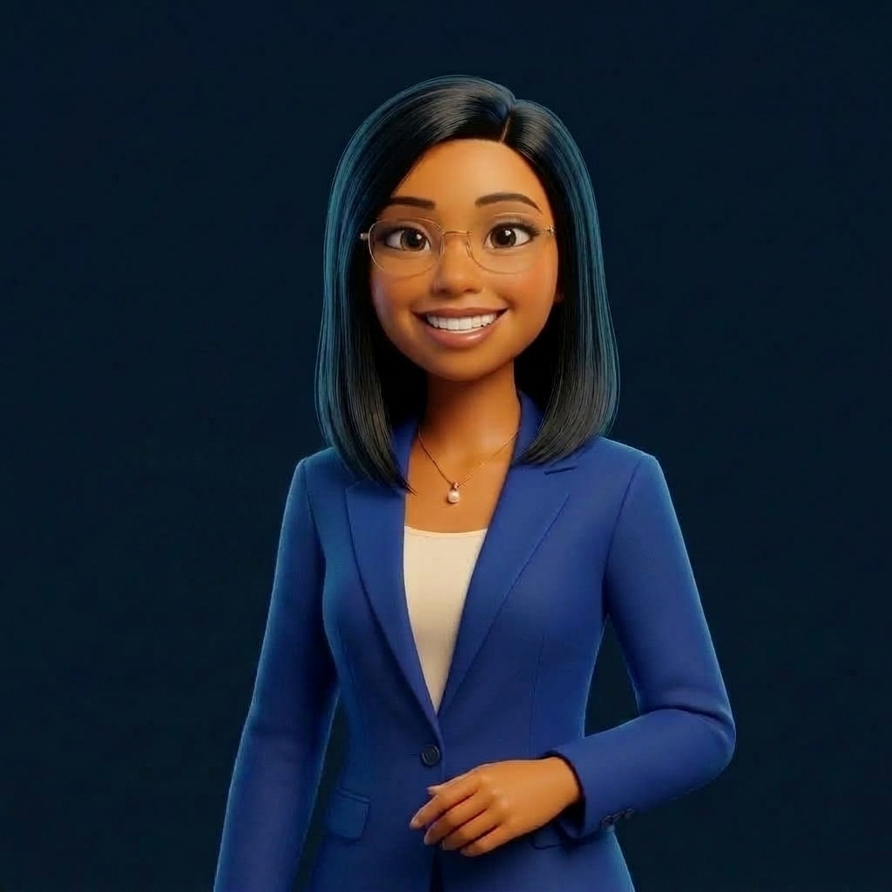

Primeira ocorrência da sigla: AZ-104 = Exame da certificação Microsoft Certified: Azure Administrator Associate (Administrador do Azure).
Ana consulta informações e registra:
Ordem de Serviço #1042 — Revisão de Freios (Veículo Fictício)
Recebe a ordem de serviço.
Bruno administra os recursos técnicos para o sistema funcionar com segurança.
A equipe acompanha o consumo mensal.
Não é necessário ter conta Azure para acompanhar esta aula!
Qual servidor e qual modelo sustentam o sistema da oficina?
Como garantir que apenas pessoas autorizadas entrem?
Como organizar e controlar os recursos contratados?
Acompanhando a mesma Ordem de Serviço #1042 em dois ambientes: o servidor físico não desapareceu!
Computador preparado para fornecer um serviço a outros computadores pela rede.
O software em si: o programa de ordens de serviço usado pela Ana.
Local de persistência dos dados, onde os registros ficam gravados sem sumir.
[Ana] ➔ [Rede Local] ➔ [Servidor Físico na Oficina]
• A Oficina Horizonte compra e mantém o equipamento físico, energia, refrigeração, cabos, discos, sistema e aplicação.
[Ana] ➔ [Internet] ➔ [Aplicação e Dados no Azure]
• Há servidores físicos (nos datacenters da Microsoft).
• ⚠️ Nuvem não promete economia automática: exige administração!
Siglas: IaaS (Infraestrutura como Serviço) • VM (Máquina Virtual) • PaaS (Plataforma como Serviço) • SaaS (Software como Serviço)
Máquina Virtual (VM) + Sistema Operacional + Aplicação da Oficina.
Equipe administra: Sistema operacional, aplicação e dados.
Aplicação publicada em uma plataforma gerenciada.
Equipe administra: Aplicação, configurações e dados (sem gerir o SO).
Aplicação pronta para uso.
Nota explícita: Exemplo de SaaS — não é um recurso criado neste laboratório Azure.
| Camada (Matriz de 4 Linhas) | IaaS (Ex.: Azure Virtual Machines) | PaaS (Ex.: Azure App Service) | SaaS (Ex.: Microsoft 365 — Exemplo) |
|---|---|---|---|
| 1. Infraestrutura física | Microsoft | Microsoft | Microsoft |
| 2. Sistema operacional | Equipe da Oficina (Cliente) | Microsoft | Microsoft |
| 3. Aplicação / configurações | Equipe da Oficina (Cliente) | Compartilhado (Cliente configura) | Compartilhado (Cliente configura) |
| 4. Dados / identidades | SEMPRE Equipe (Cliente) | SEMPRE Equipe (Cliente) | SEMPRE Equipe (Cliente) |
Estado inicial: Busca global ➔ Ação: Selecionar serviço ➔ Resultado verificável: Página de listagem aberta
No virtual machines to display (Nenhuma máquina virtual criada neste momento).
“A oficina precisa instalar e manter seu próprio sistema operacional. Qual dos três modelos combina mais diretamente com essa necessidade?”
“Colocar a aplicação na nuvem elimina a necessidade de cuidar dos acessos dos funcionários?”
Desenhe a aplicação, os dados e quem terá acesso:
Azure Virtual Machines (VM = IaaS) ou App Service (PaaS) + Storage accounts + Virtual networks.
Identidades e permissões sob cuidado da equipe no Microsoft Entra ID (Ana e Bruno).
Monitorado pela equipe de custos. Hoje: 0 recursos criados (organização antes do primeiro clique!).
1. Responsabilidade compartilhada e modelos de serviço: https://learn.microsoft.com/en-us/azure/security/fundamentals/shared-responsibility
2. Guia de estudo oficial AZ-104 vigente: https://learn.microsoft.com/en-us/credentials/certifications/resources/study-guides/az-104
Nota: Este curso desenvolve competências práticas de administração, sem prometer aprovação automática na certificação.
